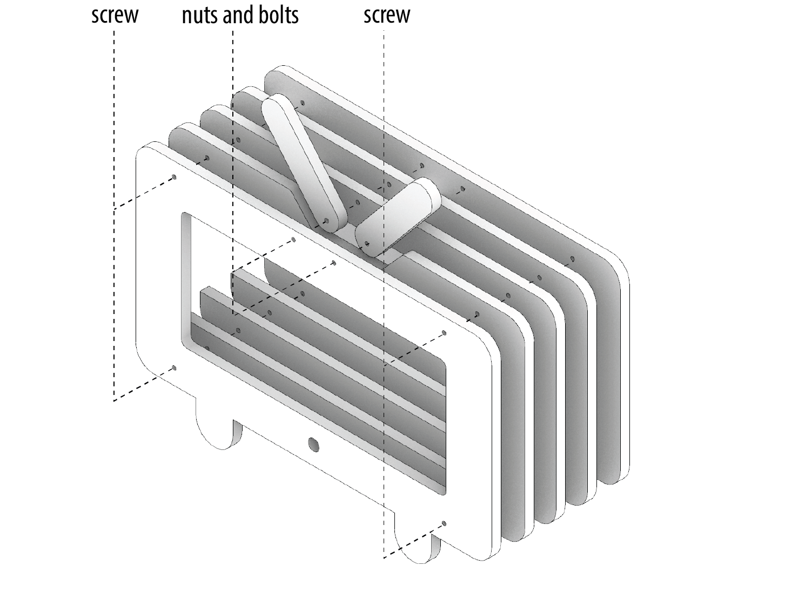

Lab 10: Thermochromic Mug!

🦺 Introduction
(1 minute read)Thermochromic paint is a type of paint that changes color at different temperatures. They can be used to paint mugs, or dye clothes.
In this lab, you'll create a thermochromic mug, which changes its pattern when you put hot water in it. During the process, you will learn how to:- ✅ Draw with acrylic-based thermochromic paint
- ✅ Design patterns that change at different temperatures
Part 0: Plan Your Assembly
The diagram below outlines the plan to assemble your phone stand.
You will assemble a phone stand consisting of five wooden layers. These layers are secured using screws. You then use nuts and bolts to create two hinged, adjustable antennas for added functionality.
Assembly Process
- Align the Layers: Stack the wooden layers neatly and hold them securely in place using wood tape.
- Drill Holes: At the marked positions, drill holes for the screws and bolts.
- Secure the Layers: Fasten the layers together by inserting screws into the drilled holes.
- Attach the Antennas: Use nuts and bolts to assemble and secure the adjustable hinged antennas.